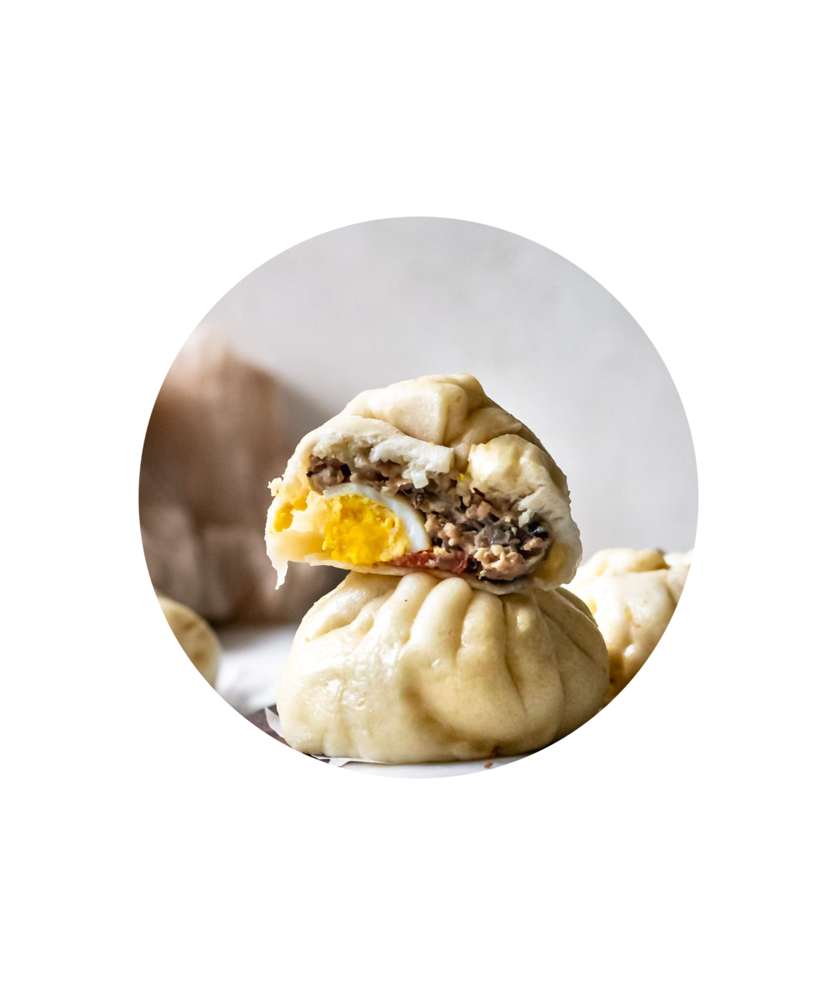
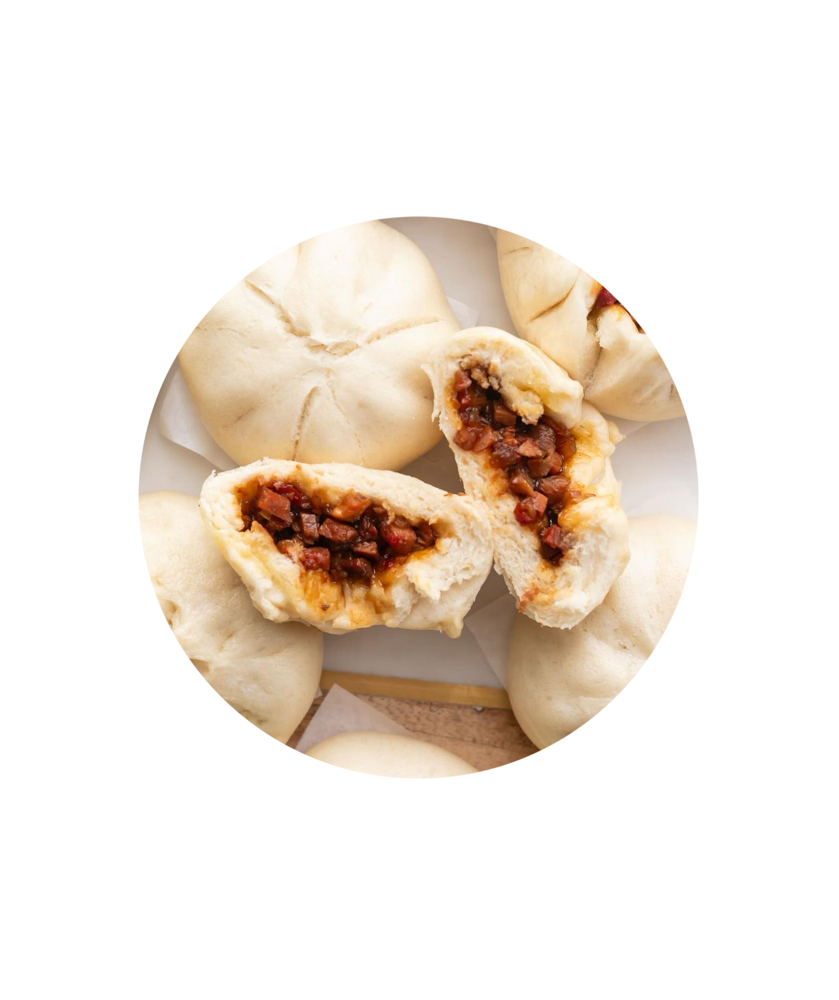
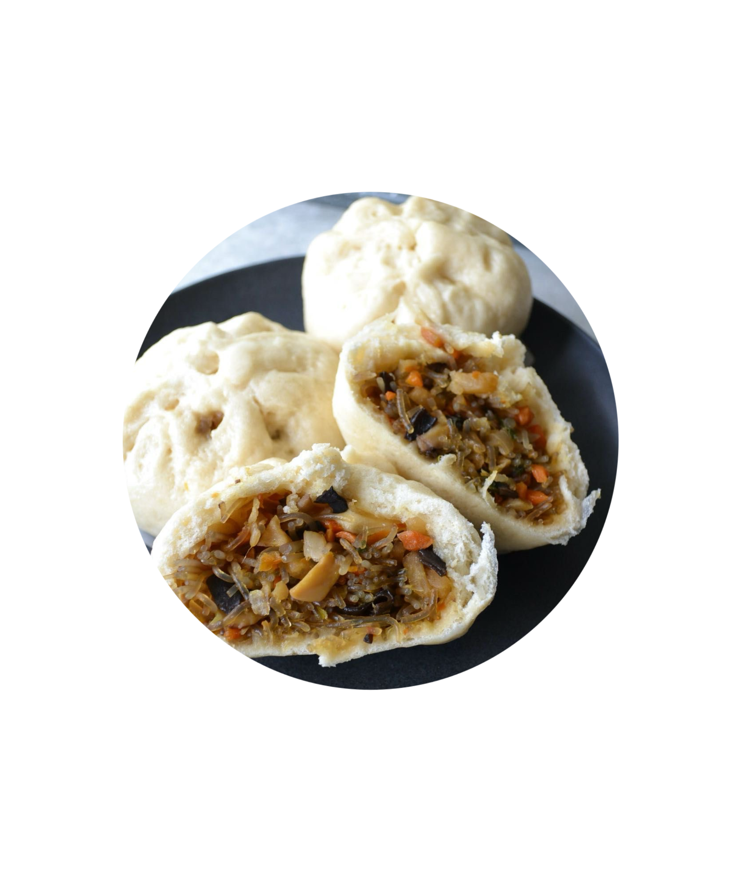
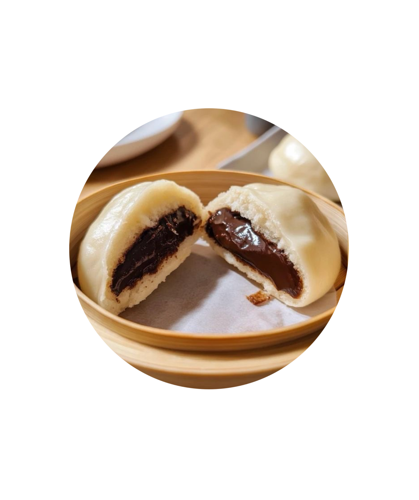
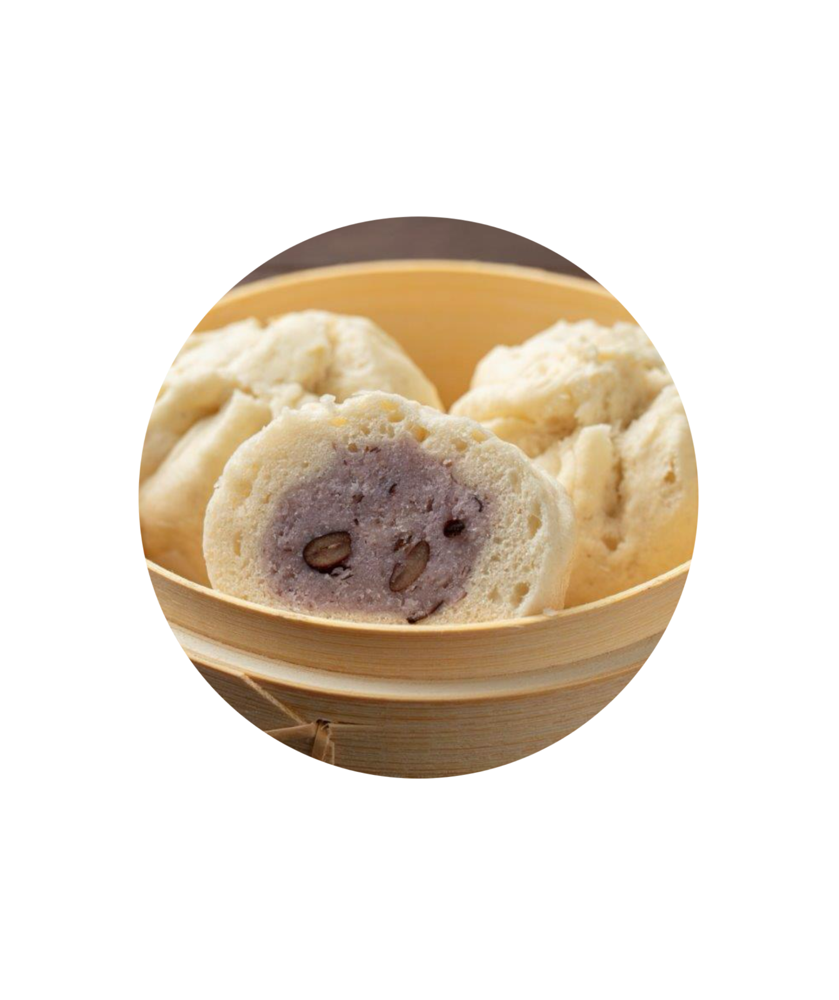
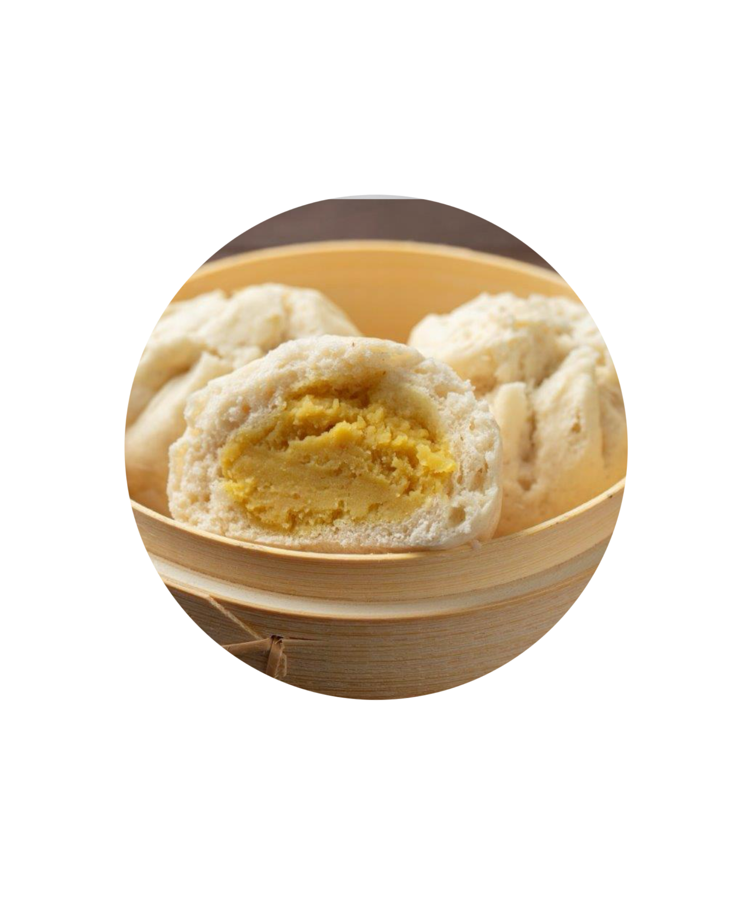

CHAU'S POT: BANH BAO SELECTIONS
Delicious, fresh banh baos for you to munch on.
Call us to check the availability of our baos.

Traditional Banh Bao
A classic street dish from Vietnam, perfect for a quick snack. Filled with mixture of ground pork, wood ear mushrooms, onions, hard-boiled quail and chinese sausage. Warm and hearty in every bite.

Banh Bao Xa Xiu
Bun filled with charsiu, a pork that is sweet, savory, and a sticky red glaze. Juicy, flavorful, and slightly smokey.

Banh Bao Chay
Vegan alternative. Steamed bun filled with a mix of seasoned vegetables. Includes carrot, cabbage, mushrooms, mung bean vermicelli, and more. Light and full of fresh flavor.

Chocolate Banh Bao
Pillowly bao with a rich, melted chocolate center. It's perfect as a dessert treat.

Taro-Red Bean Banh Bao
Housemade taro paste with sweet red bean in a pillowly bao. Subtly sweet and smooth, perfect for those who likes subtle sweetness.

Durian Custard Banh Bao
Silky custard infused with bold, aromatic durian. Rich, creamy, and made for adventurous palates.